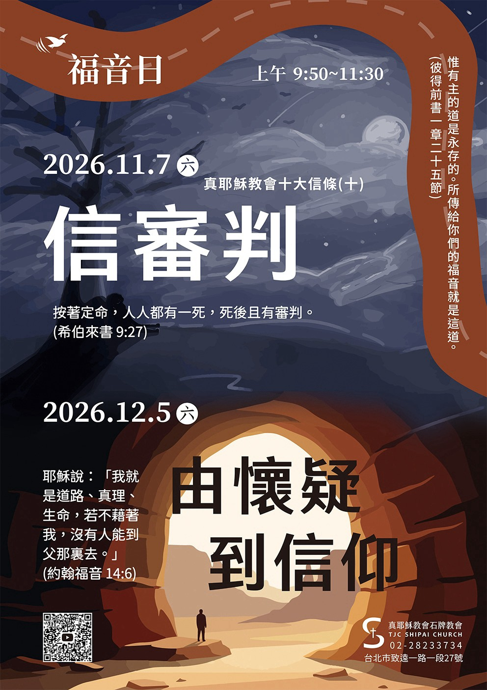
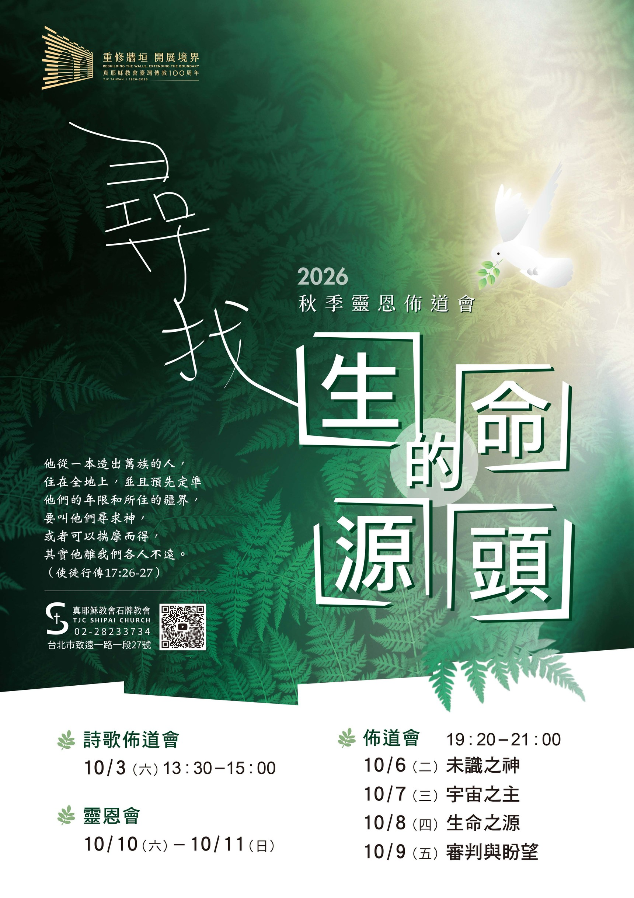
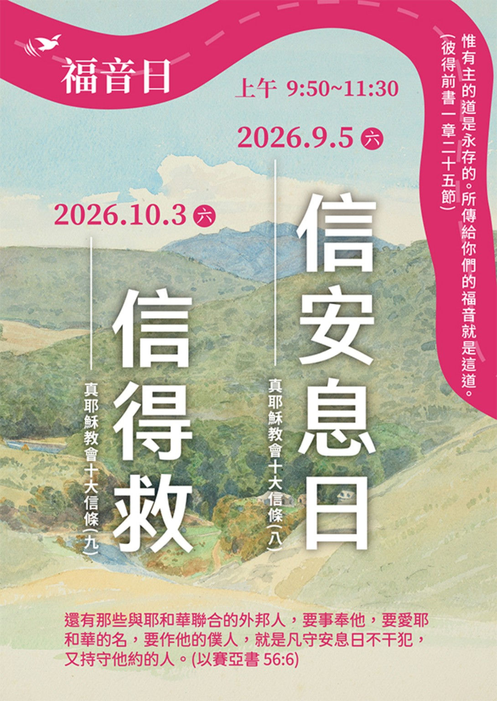

首頁
我要去教會
關於石牌
教會沿革
生命見證
最新公告
友站連結
真耶穌教會
真耶穌教會聖樂網
宣道整合包
台灣葡萄園社會關懷協會
利河伯社會福利基金會
eRhema Bible App
讀經專欄
石牌天母每日讀經心得網
如鷹展翅
牧養主的羊
與我聯繫
True Jesus Church Shipai
凡勞苦擔重擔的人，
可以到我這裏來，
我就使你們得安息。
（馬太福音第十一章第28節）



←
1 / 3
→
每日更新
每日讀經心得
正在讀取今日文章⋯
閱讀完整心得
崇拜聚會
聚會連結
晚間聚會
週三、週五
19:50–21:00
安息日聚會
週六
09:30–11:15
週六
13:10–14:45
前往聚會連結
我要去教會
地址
112 台北市北投區致遠一路一段 27 號
電話
02-2823-3734
主要聚會
週六安息日聚會 09:30–11:15／13:10–14:45
崇拜聚會及團契時間
Google 地圖
News
最新消息